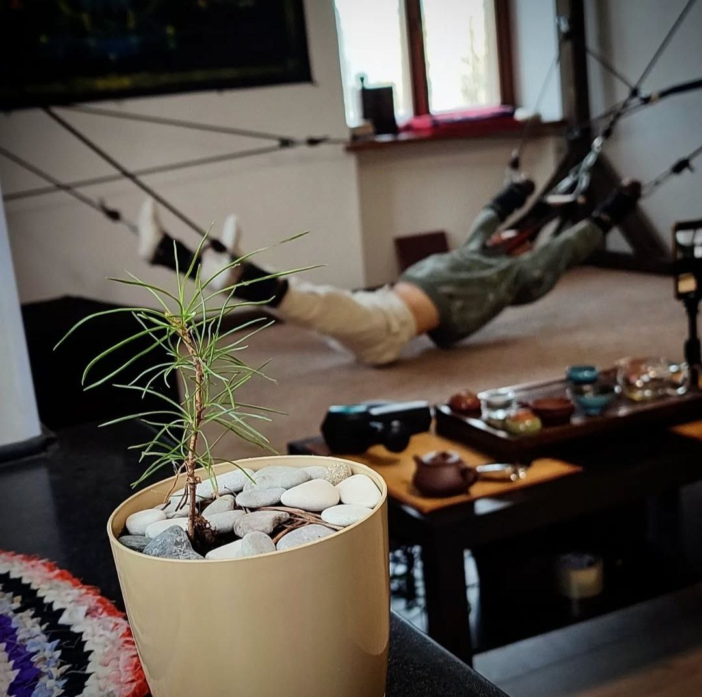
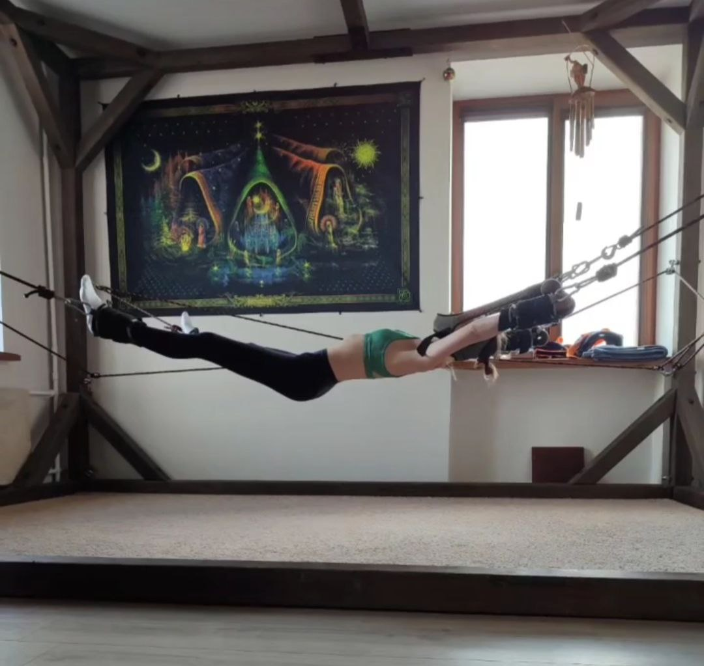
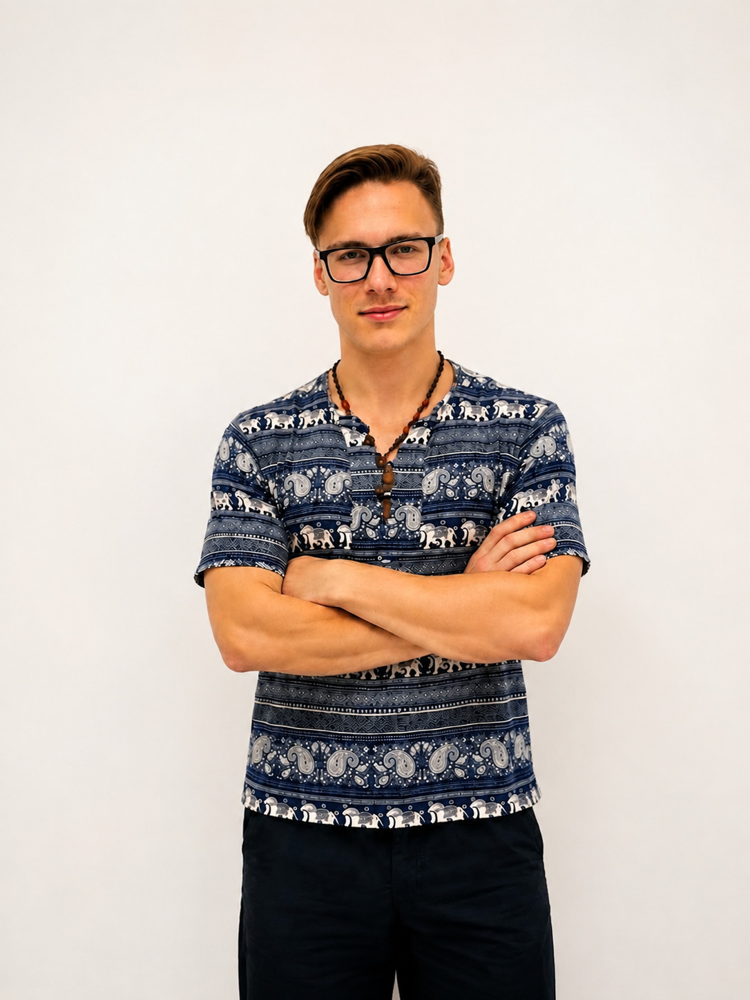

Тренажёр Прави́ло и телесно-ориентированная терапия
Профессиональный массаж и современные методики восстановления
Это для вас, если:
- Работа за компьютером или вождение: Сидячий образ жизни вызывает
дискомфорт и напряжение? Наш массаж и занятия на тренажёре Правило быстро снимут мышечные
зажимы
- Боли и гипертонус: Страдаете от головной боли, болей в спине или шее?
Сочетание массажа и телесной терапии даёт двойной эффект расслабления и восстановления
- Стремление к активному образу жизни: Хотите поддерживать тело в тонусе?
Массаж подготовит мышцы к нагрузкам, а тренажёр укрепит мышечный корсет
Почему выбирают нашу массажную студию?
• Индивидуальный подход к каждому клиенту
• Сочетание традиционного массажа и современных методик
• Комфортная атмосфера для полного расслабления
• Видимый результат после первых сеансов
• Профессиональные массажисты с медицинским образованием

Что такое тренажёр Прави́ло?
Это специальное кинезиоустройство, созданное на основе древней мудрости, которое использует принцип мягкой тракции. Он прост в использовании и помогает снять напряжение, улучшить кровообращение и убрать зажимы, способствуя общему восстановлению вашего организма.

Преимущества занятий на тренажёре
- Подходит для людей с любым уровнем подготовки.
- Методики,
проверенные временем и научными исследованиями.
- Команда
сертифицированных профессионалов, которые заботятся о вашей безопасности.
Что ожидать после тренировок?
- Прилив сил и энергии на весь день.
- Улучшение настроения и избавление от усталости.
- Снятие перенапряжения в мышцах и глубокое расслабление.
- Красивую осанку и
облегчение болей в спине.
Массаж и работа с телом для вашего восстановления Лимфодренажный, спортивный, общий классический и другие! Эти процедуры помогут вам подготовиться к занятию и максимально расслабиться после, усиливая положительный эффект от тренировки на Правило
Раймонд

Меня зовут Раймонд. Я — мастер массажа, который работает с телом на уровне фасций, дыхания и внимания.
Моя задача — не просто «сделать массаж». Я помогаю телу вспомнить, как оно может двигаться свободно, дышать глубже и быть в контакте с собой.
В основе моего подхода — понимание того, что тело — это единая система. Напряжение в одной точке всегда отзывается в другой. Я работаю не с симптомами, а с причиной — с теми зажимами, которые ограничивают движение, дыхание и самоощущение.
Я не делю людей на спортсменов и не спортсменов. Я работаю с теми, кто хочет чувствовать своё тело, а не просто пережить массаж.
Мой подход
Я работаю с фасциями — той самой сетью, которая пронизывает всё тело и связывает мышцы, кости и органы в единую систему. Когда фасция залипает, возникает напряжение, боль, ограничение движения. Моя задача — мягко и глубоко восстановить её подвижность.
В зависимости от состояния клиента я могу работать:
· глубоко и интенсивно — чтобы убрать зажимы и восстановить подвижность;
· мягко и текуче — чтобы снять напряжение и вернуть телу лёгкость;
· в потоке — когда тело само ведёт процесс.
Я не использую шаблонов. Каждый сеанс — это диалог с телом, а не просто набор техник.
Мой массаж подходит тем, кто:
· чувствует напряжение в шее, плечах или пояснице;
· восстанавливается после нагрузок или травм;
· хочет снять стресс и вернуть контакт с телом;
· просто устал и хочет почувствовать лёгкость.
Я не обещаю чудес. Я обещаю честную работу с телом и внимание к тому, что оно говорит.
Что такое фасции и почему они важны?
Фасция — это не просто «плёнка» под кожей. Это трёхмерная сеть из соединительной ткани, которая пронизывает всё тело: мышцы, кости, нервы, органы. Она держит всё на своих местах, но при этом должна быть эластичной и подвижной.
Когда фасция здорова — тело двигается свободно, дыхание глубокое, напряжение не накапливается. Когда она «залипает» — появляются зажимы, боль, ограничения в движении. И это не лечится простым «размять мышцу». Фасция — это среда, которая требует другого подхода.
Как я работаю с фасциями?
Я не просто «мну» тело. Я работаю с фасцией мягко и глубоко, помогая ей вернуть свою текучесть. В процессе я использую:
· Медленные, плавные движения — чтобы фасция могла «расправиться» без сопротивления.
· Работу с дыханием — чтобы тело само отпускало то, что держало.
· Внимание к цепочкам напряжения — потому что боль в шее часто идёт от стоп, а зажим в пояснице — от таза.
В результате уходят не только боли, но и возвращается лёгкость, гибкость, ощущение, что тело — это союзник, а не враг.
Мы любим получать отзывы от наших клиентов и гордимся тем, что многие из них находят у нас решение своих проблем. Присоединяйтесь к тем, кто уже открывает для себя новый уровень комфорта и здоровья!
Наталья М.
Привет. Я после вчерашнего сеанса ощутила давно забытую легкость. Тело стало как-будто более живое. Ушла та боль, которую испытывала перманентно, я ее уже даже не замечала, а теперь чувствую эту разницу и она окрыляет. Спасибо тебе за чудо, за то, что у меня снова выросли крылья!
Алёна Н.
Раймонд, благодарю!! Спасибо за то, что ты делаешь. Легче сразу стало, а на утро вообще прошло. Мышцы побаливают, как после тренировки, хотя это даже прикольно. Ещё и тревога ушла, стало легче воспринимать происходящее... короче круто! На следующий раз давай запишемся.
Евгений О.
Я недавно посетил массажиста Раймонда и остался очень доволен его работой. Массаж всего тела был выполнен на высшем уровне: Раймонд проявил профессионализм и внимание к деталям. Он использовал нужное усилие, что позволило мне полностью расслабиться и избавиться от напряжения в мышцах. С каждым движением я чувствовал, как уходит усталость, а тело наполняется легкостью. Раймонд обладает отличным чувством анатомии и понимает, какие зоны требуют большего внимания. Кроме того, в кабинете была создана уютная атмосфера. Я определенно рекомендую Раймонда всем, кто ищет качественный массаж с индивидуальным подходом! Обязательно снова приду!
Мария А.
Раймонд, привет) Чувствую себя прекрасно, у меня словно все краски и ароматы стали ярче, звуки объемнее. Ощущаю себя наполненной светом и любовью, как будто внутри разожгли огонь посреди соснового леса, он танцует, переливается, искрится. Чувствую людей вокруг себя, они оборачиваются и смотрят, смотрят. А мне просто так хорошо и хочется улыбаться. Я испытала сегодня нечто неповторимое, то, что хочется сохранять и нести в себе бесконечно долго. Чувствую твой поток чистый, живой, теплый, настоящий. Благодарю тебя каждой клеточкой своего физического тела и всей своей необъятной душой! Пишу и плачу от счастья 🤍🙏🏻
Услуги
• Массаж всего тела
• Занятие на прави́ло
• Спортивный массаж
• Классический массаж
• Массаж лица
• Массаж ног
• Лимфодренажный массаж
• Антистрессовый массаж
• Антицеллюлитный массаж
• Висцеральный массаж
• Мануальный массаж
• Юмейхо-терапия
• Точечный массаж
• Огненный массаж
• Лечебный массаж
Прайс
Любой* сеанс:
* - только для новых клиентов.
Выезд — по запросу
Абонементы — от 3 до 30 сеансов по рекордным скидкам!
Если вы чувствуете, что ваше тело хочет большего — напишите мне. Я отвечу на вопросы, подберу время и помогу вам сделать первый шаг к свободе движения и дыхания!
Контакты
🎯 Массажная студия "Вперёд и Вверх!"
👨💼 Мастер: Раймонд
Я работаю с телом чтобы вернуть ему свободу🏢 Адрес: г. Екатеринбург, Белинского 173
🕓 Время работы: по будням: 17:00 - 23:00
по
выходным: 12:00 - 23:00
📞 Телефон: +7 (922) 260-55-57